Z–' Q–O keys 1–= FX … REC [ ] OCT ↑ ↓ SELECT ← → ALGORITHM Shift-click holds a button
.MP3/.WAV Sample Converter (USR1..3) & .MID Multi-Track Importer
.mp3/.wav files into USR1–USR3 (immediately playable in SAMPLE, SLICE, SCRUB, WAVETABLE & GRAIN), or import .mid/.midi files with custom track-to-track routing.⚡ USB-MIDI Firmware Updater & Stock V15 Recovery
Update a physical M-VAVE FM-1 directly from Chrome or Edge over a standard USB data cable (WebMIDI SysEx). No external hardware probe is needed. Static hosting (such as GitHub Pages or localhost) serves the firmware images directly to your browser.
1. Install Loom FM-1 Firmware
Flashes the built loom-groovebox.fswc Loom FM-1 firmware package to your connected FM-1.
Checking for bundled loom-groovebox.fswc…
2. Restore Official M-VAVE Stock V15
Automatically backs up your Loom songs, presets, and samples to a JSON archive, then restores the official factory FM-1_015.fwsc firmware.
Checking for bundled FM-1_015.fwsc…
📖 Loom FM-1 Illustrated Guide & Interactive Reference Manual
Explore the 5-track groovebox architecture, master send effects, per-track insert DSP, and hardware keyboard shortcuts in an illustrated magazine format. Type in the search box below to instantly filter any parameter, button, or engine across the guide.
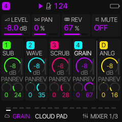
🎛️ 5-Track Architecture & Hardware Shortcuts
Loom FM-1 expands the M-VAVE FM-1 into a 5-track polyphonic groovebox with 4 melodic synth/sampler tracks (1–4) and a dedicated 5th synthesized Drum track (D). Tapping HOME toggles the live 5-column mixer where each track features high-resolution LED dials for LEVEL (dB with live meters), PAN, and REV send. All tracks support full parameter automation, choke groups, and independent sound engines.
T1, T2, T3, T4, or DRUM (D).T1, T2, T3, T4, or DRUM (D).DUCK, CHOR, DLY, and RVB.S01–S16).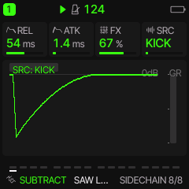
💥 Sidechain Ducking Compressor (Send 1 / Duck Page)
Ducks tracks and/or master FX whenever the selected drum trigger hits. TRIG selects KICK (default), K+SNR (kick + snare), K+TOM (kick + tom), or ALL (responds to every drum part); PUMP sets threshold/ratio depth; RELS sets release recovery speed; FXDK ducks the global Chorus/Delay/Reverb tails.
KICK (default, standard 4-on-the-floor pumping), K+SNR (kick + snare), K+TOM (kick + tom), or ALL (responds to every drum part).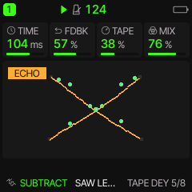
📼 Continuous Analog Tape Echo (Delay Page)
A continuous analog tape echo emulation featuring smooth delay time sweeps with realistic capstan transport inertia for classic pitch-bent dub maneuvers.
- TIME: Controls the vertical bounce cadence of the dots. Shorter delay times bounce rapidly, while longer delay times bounce at a slower tempo.
- FDBK (Feedback): Multiplies the number of bouncing dots (from 1 dot at very low feedback up to 16 dots at full feedback) oscillating across the trampoline line in staggered phase offsets.
- TAPE (Wobble): Warps the trampoline surface with undulating sine waviness and increases stroke thickness (1 to 4 px) to reflect capstan motor drift and heavier tape saturation.
- CROSS: Splits and rotates the trampoline into two counter-angled planes up to ±45° (lower-left to upper-right and lower-right to upper-left), with dots bouncing diagonally between channels to illustrate stereo ping-pong cross-coupling.
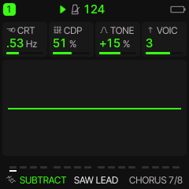
🌊 Multi-Voice Stereo Chorus & Ensemble (Chorus Page)
Lush quadrature multi-voice chorus that thickens tracks into wide stereo textures and vintage analog ensemble pads.
- VOIC (Voicing): 1 voice shows a single open-mouthed singing face. Selecting 2, 3, or 4 voices renders stacked wireframe edge silhouettes behind and to the left of the main face, visually stacking the chorus ensemble.
- CRT (Rate): Regulates modulation speed, visualized by the sine wave becoming denser across the screen (scaling up to 10 tightly packed waves) at the same amplitude, while maintaining a smooth, slow drift.
- CDP (Depth): Scales the vertical amplitude (height) of the sine wave, reflecting the pitch detune excursion.
- TONE: Dynamically shifts the face and waveform across a vivid color spectrum from warm red (vintage analog warmth) to cool electric blue (crisp shimmer) for high screen visibility.
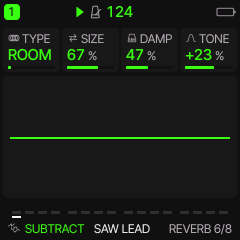
🏛️ Stereo Reverb Tank (Reverb Page)
Rich algorithmic stereo reverberation providing acoustic space and ambient atmospheric decay.
ROOM (tight acoustic reflections), SPRING (metallic vintage tank), HALL (massive spacious concert hall), or SPACE (cosmic modulated reverb with multi-rate LFO detuning and celestial ambient wash).- SIZE: Dynamically expands or shrinks the cavern arch diameter, ceiling height, and floor span to depict room volume and decay tail length.
- DAMP (Damping): Multiplies the number and density of rocky stalactites hanging from the cavern roof (from 2 up to 14 stalactites), illustrating high frequencies being absorbed by uneven cave surfaces.
- TONE: Adjusts the overall illumination and brightness of the cavern walls and floor from deep shadowy dark tones to luminous, reflective highlights.
- TYPE (Chamber Model): Transforms the cave's atmospheric color palette: ROOM (warm amber limestone), SPRING (surf teal tank), HALL (cathedral crimson red), or SPACE (deep cosmic purple illuminated by animated twinkling cyan and white starlight crystals).
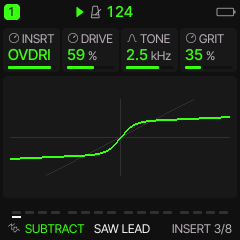
⚡ Per-Track Dedicated Insert Effects (Insert Page)
Each of the 5 tracks features its own dedicated insert effect processor before the global send buses, complete with live real-time distortion transfer curve visualizations:
DRIVE sets input saturation pre-gain (1x–13x); TONE rolls off harsh highs with dual low-pass filters; LEVEL trims output volume (0 dB at 112).DRIVE pushes the signal into flat hard clipping; TONE tames high-frequency buzz; LEVEL manages output gain.DRIVE controls folding depth and harmonic multiplication; TONE shapes brightness; LEVEL balances output gain.DRIVE sets fuzz intensity; TONE shapes harmonic balance; LEVEL controls volume.BITS reduces bit depth (1–16 bits) for gritty quantizing noise; RATE decimates sample rate (689 Hz to 44.1 kHz) for retro sampler aliasing; LPF smooths harsh high-frequency aliasing hash.RATE sets LFO sweep speed (0.1–20 Hz); DEPTH controls frequency range (150 Hz to 4.8 kHz); FDBK sets all-pass resonance for vocal sweeps.RATE controls sweep speed; DEPTH sets delay range (0.25 ms to 5.0 ms); FDBK sets resonant feedback (0% to 85%) for jet-plane swooshes.RATE controls modulation speed; DEPTH controls detune depth; FDBK adds subtle recirculation resonance.RATE sets modulation speed; DEPTH sets flutter depth; SAT injects warm magnetic tape saturation.MODE selects harmony interval (+1OCT, +2OCT, -1OCT, -2OCT, DUAL, MAJOR, DOM7, MAJ7, MIN7, DIM); UNIS controls detune; TONE filters harmony voices.DRIVE pushes clipping gain; TONE controls filter cutoff; GRIT injects non-linear sine wavefolding grit into loud peaks.RATE sets pan speed; DEPTH sets stereo sweep width; SHAPE selects modulation shape (SINE, TRI, SQR).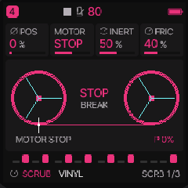
🎛️ SCRUB Engine: Turntable Platter & Reel-to-Reel Tape
Real-time physical vinyl platter and magnetic tape scrubbing engine. Features physical inertia simulation, bi-directional motorized playback, surface drag friction, and vintage tape drift with live waveform and needle tracking:
-3.0x reverse, through 0.0x (stopped), to +3.0x forward.USR1–USR3).OFF plays once; FWD forward loop; REV reverse loop; PING bi-directional ping-pong platter bounce).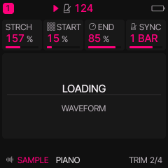
🎹 SAMPLE Engine: Chromatic Polyphonic Sampler & Tempo Sync
Direct chromatic sample playback across keyboard zones with independent tape-speed pitching, granular time-stretching, loop trim, and tempo sync:
PIANO, EP, FLUTE, SAX) or user sample slots (USR1–USR3).ONE (forward one-shot), SUS (forward sustain), LOOP (forward loop), REV (reverse playback), or PING (bi-directional ping-pong bounce between trim markers).-24 to +24 semitones) without altering stretch length.SYNC.1 STEP, 2 STEPS, 1 BEAT, 2 BEATS, 1 BAR, 2 BARS, or 4 BARS. Automatically recalculates STRCH to lock duration while preserving chosen SPEED textures.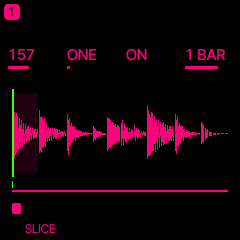
✂️ SLICE Engine: Auto-Transient Beat Slicer & 16-Pad Chops
Intelligent transient beat slicer that chops loops and drum breaks into tempo-synchronized slices with individual trigger pads. The 16 hardware white keys trigger individual slices in real time:
USR1–USR3).-24 to +24 semitones) without altering playback duration.SHOT plays slice to completion; GATE sounds only while held; LOOP continuously loops the slice).FWD forward; REV reverse; PING bi-directional ping-pong slice bounce).1 STEP, 2 STEPS, 1 BEAT, 2 BEATS, 1 BAR, 2 BARS, or 4 BARS. Automatically recalculates STRCH so the overall loop matches the selected bar/beat length at the current BPM, while individual slice points preserve natural transient placement (averaging 1 step per slice across a 1-bar 16-slice break).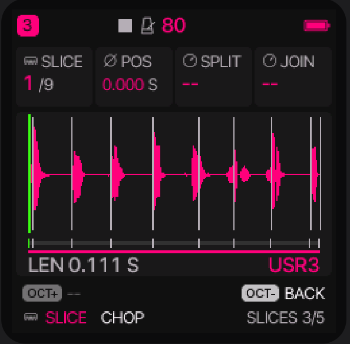
🔬 Manual Slice Point Fine-Tuning, Splitting & Merging (SLICES Page)
Tap the EDIT button on any SLICE track to access the dedicated SLICES waveform editor (Page 3 of the EDIT family). Here you can inspect the decoded waveform, nudge boundaries with adaptive zoom, and split or join slices by hand:
K1 (SLICE) to cycle through markers 1/N to N/N, or select the END tail marker. Alternatively, strike any white key on the keyboard to instantly jump to that slice—the key LEDs light up to confirm which keys play the active slice.K2 (POS) to nudge the selected boundary marker earlier or later in time (displayed with millisecond precision, e.g. 1.240 S). The display features adaptive dynamic zoom: the viewport automatically spans only the region between the preceding and succeeding markers, providing smooth, column-by-column fine-step resolution. Moving marker 1 trims sample attack; moving the END marker trims the tail. For user slots (USR1–USR3), moving any marker automatically enters custom manual slicing (DIV = MAN).K3 (SPLIT) clockwise to arm the action in the footer, then press the OCT+ button to execute. The slice is cleanly cut in half at its midpoint into two separate slices (supporting up to 32 slices). SPLIT remains armed so you can tap OCT+ repeatedly to rapidly subdivide breaks. Tap OCT- to disarm.K4 (JOIN) clockwise to arm the action in the footer, then press the OCT+ button. The selected slice's start boundary is deleted, seamlessly joining it into the preceding slice. Tap OCT+ again for sequential merges, or tap OCT- to disarm.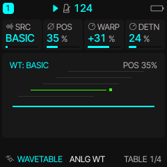
🌊 WAVETABLE Engine: 3D Morphing Wavetable Synthesis
Multi-frame wavetable synthesis engine featuring 8 single-cycle frames (512 samples each) with 3D isometric stack visualization, non-linear phase distortion warping, and analog drive:
BASIC synthetic morph, PIANO, FLUTE, SAX, BREAK, or USR1–USR3).-64 to +63) compressing or bending the waveform for aggressive formant shifts.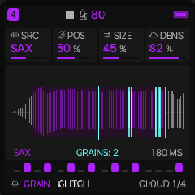
✨ GRAIN Engine: Asynchronous Granular Cloud Synthesis
Real-time granular synthesis engine that deconstructs sample audio into streams of microscopic sound grains with multidimensional temporal and pitch scattering:
PIANO, FLUTE, SAX, BREAK, or custom user slots USR1–USR3).-24 to +24 semitones).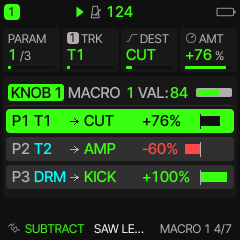
🎚️ Multi-Track Patch & Macro Modulation Matrix (LFO Menu Pages 4–7)
Loom FM-1 features a comprehensive 4-knob performance macro matrix accessible by tapping the LFO button to open pages 4 through 7 (MACRO 1 4/7 through MACRO 4 7/7). A single physical macro knob can simultaneously modulate up to three completely independent parameters across any combination of tracks with precision bipolar attenuation:
T1–T4) or the Drum track (DRM). For example, a single macro turn can open the synth cutoff on T1, duck pad volume on T2, and pitch up the kick drum on DRM simultaneously.-100% to +100%. Positive values increase the parameter as the macro turns up; negative values invert the modulation (attenuating or closing down the parameter as the macro knob advances).PITCH, CUT (filter cutoff), AMP (amplitude gain), PAN (stereo panning), DLY (delay send), and REV (reverb send). Target assignments also include all 8 engine-specific macro parameters (E1–E8) or individual drum instrument levels (KICK, SNAR, CLAP, HATS, CYMB, TOM, PERC, BELL).K1 (PARAM): Selects destination slot 1, 2, or 3 (1/3, 2/3, 3/3);
K2 (TRK): Selects target track (T1..T4, DRM);
K3 (DEST): Selects the destination parameter;
K4 (AMT): Dials bipolar modulation strength (-100% to +100%).
VAL: 0..127) and progress bar. Each parameter row displays an intuitive routing diagram (e.g. P1 T1 → CUT +76%) with a color-coded bipolar meter: glowing green for positive modulation and red for inverted negative attenuation.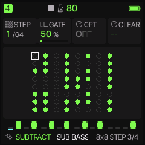
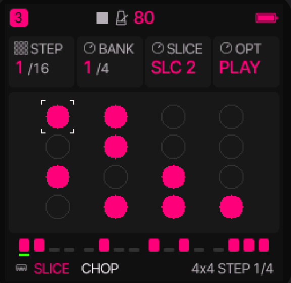
🎹 64-Step Dual-View Sequencer: Step & Pattern Workflows
Loom features an expressive dual-view 64-step sequencer across four dedicated pages (4x4 STEP 1/4, 4x4 PAT 2/4, 8x8 STEP 3/4, 8x8 PAT 4/4). Tap SEQ to cycle between views. Notes can be recorded live from the hardware keys, step-entered, or motion-automated with full per-step parameter locks:
SLICE (SLC 1..16) when on the SLICE engine, drum voice (KICK, SNARE, CLAP...) when on the DRUM engine, or chromatic pitch (C-1 to G9) on synths and samplers. Available on Knob 3 in 4x4 STEP and Knob 2 in 8x8 STEP.OFF (silent rest), PLAY (standard note strike), TIE (legato tie sustaining previous note without re-triggering envelopes), PUNCH (hard accented strike with maximum velocity), RATCH 2 (2-hit sub-step burst), RATCH 3 (3-hit triplet sub-step roll), RATCH 4 (4-hit rapid burst), and P+RATCH (accented burst).-50% to +50%, 0% straight).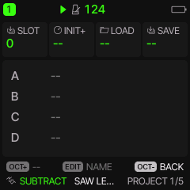
💾 SAVE Menu Pages & Project Workflow (Pages 1–5)
Manage sounds, projects, phrases, and personal boot templates across 5 organized pages. Tap SAVE to open; turn K1 to browse pages:
A–D). Turn K1 to choose slot, K3 to Load, K4 to Save. Turn K2 (INIT+) to save your current layout as the custom boot template.TRACK resets active track; SEQ clears step pattern; SOUND resets synth patch; LOCKS removes automation.U01–U32). Save custom sounds on the active track or load them into any track.★). Filter by category tag (ALL, FAV, USER, BASS, LEAD, PAD, etc.).P01–P16). Save or load sequence riffs and motion locks independently of the song.🌐 Explore the Complete Loom Ecosystem
Looking for more tracks, larger tactile displays, or full multi-touch expressive control? Explore the other projects in the Loom family:
🎛️ Loom Pi (Raspberry Pi Hardware) →
Dedicated standalone hardware groovebox powered by Raspberry Pi. Features a rich high-resolution color UI, multi-track audio recording, advanced physical rotary encoders, and expanded connectivity. Integrates seamlessly with generic USB and DIN MIDI controllers.
📱 Loom Groovebox for Android →
Expressive mobile touchscreen groovebox app for Android tablets and phones. Full multi-touch piano roll, tactile synth editing, real-time automation, and portable loop creation. Integrates smoothly with generic class-compliant USB and Bluetooth MIDI controllers.
⚡ Loom FM-1 Source & Releases →
Ultra-compact 5-track groovebox firmware for the M-VAVE FM-1. 14 engines, 64-step sequencer, web workbench, and complete open-source GPL-3.0 codebase.
SUBTRACT (4-Osc Subtractive Synth)
Four rich morphing oscillators with hard sync, wavefolder, resonant 24dB/12dB LP/BP/HP filters, sub-oscillator, and dedicated envelopes.